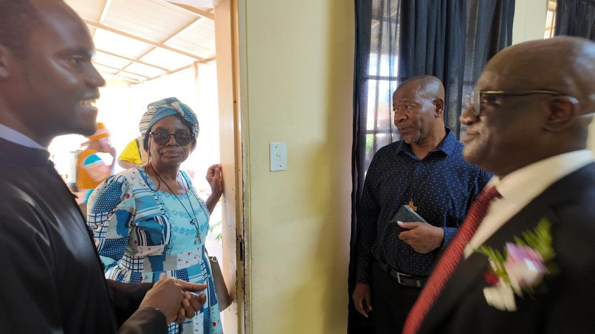
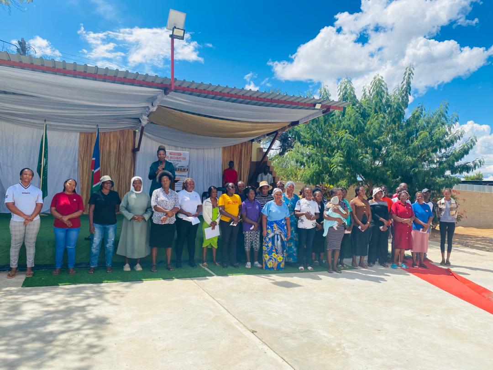
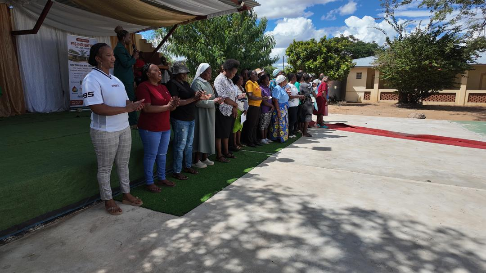

Don Bosco Youth Centre works with small business owners and entrepreneurs around Rundu who wanted to improve businesses they had already started but never had formal training to run. There was no shortage of ideas or effort, just a gap in the basics: pricing, customer validation, and a clear picture of what the business actually was.
I helped design and run a two week pre-incubation training across two cohorts. Each entrepreneur got one on one interviews and business mentoring alongside the group sessions, and worked through a business model canvas to map out their own business properly, some for the first time. At the end of the two weeks, everyone pitched their business to three local businessmen, myself included, in something close to Shark Tank, except instead of handing out money we picked 10 trainees whose businesses, and whose grasp of the training itself, stood out. Those 10 went on to further support and resources from Don Bosco.
One of them was Sr Johanna, who runs St Paul's Private School in Sauyemwa and teaches pre-primary classes full of kids whose families can't always pay. During the training she started collecting empty snack packets, and has been weaving them into mats and bags ever since, work she showed us alongside her principal teacher when we visited her plot on the Kavango River. It is still mostly her doing the weaving, but if her students learn the technique, it is a skill that earns money and teaches them to see litter as material rather than rubbish, something HOTA already sells a version of out of Ndama. Her real ambition is bigger: a boarding school on that same plot, looking across the river into Angola. HOTA is now looking at where a longer partnership with St Paul's could go, under the same Learn, Create, Market model behind the rest of this training.


